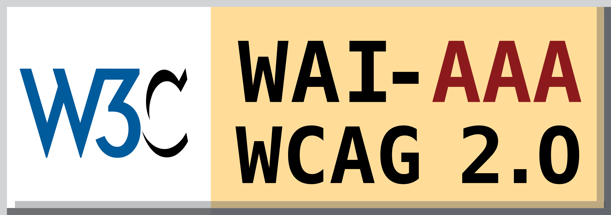

POR UN MUNDO ACCESIBLE PARA TODOS
Pautas y niveles de conformidad
Para hacer el contenido Web accesible, se han desarrollado las denominadas Pautas de Accesibilidad al Contenido en la Web (WCAG), cuya función principal es guiar el diseño de páginas Web hacia un diseño accesible.
WCAG consiste en 14 pautas que proporcionan soluciones de diseño y que utilizan como ejemplo situaciones comunes en las que el diseño de una página puede producir problemas de acceso a la información.
Cada punto de verificación está asignado a uno de los tres niveles de prioridad establecidos por las pautas.
- Prioridad 1.
- Prioridad 2.
- Prioridad 3.
son aquellos puntos que un desarrollador Web tiene que cumplir ya que, de otra manera, ciertos grupos de usuarios no podrían acceder a la información del sitio Web.
son aquellos puntos que un desarrollador Web debería cumplir ya que, si no fuese así, sería muy difícil acceder a la información para ciertos grupos de usuarios.
son aquellos puntos que un desarrollador Web debería cumplir ya que, de otra forma, algunos usuarios experimentarían ciertas dificultades para acceder a la información.
En función a estos puntos de verificación se establecen los niveles de conformidad:
- Nivel de Conformidad "A".
- Nivel de Conformidad "Doble A".
- Nivel de Conformidad "Triple A".
todos los puntos de verificación de prioridad 1 se satisfacen.
todos los puntos de verificación de prioridad 1 y 2 se satisfacen.
todos los puntos de verificación de prioridad 1,2 y 3 se satisfacen.
Las pautas describen cómo hacer páginas Web accesibles sin sacrificar el diseño.
Ejemplos: Un ejemplo de prioridad 1 sería la identificación clara de cualquier cambio de idioma que se pueda producir en el texto de un documento. Es decir, si se utilizan diferentes idiomas es necesario que cualquier cambio esté claramente señalado con el atributo lang:
Un ejemplo de código correcto sería el siguiente:
<p>
<q>Buenos días Philip</q>
<q lang="en">Good morning</q>. Respondió Philip en inglés.
<q>¿Qué tal estás?</q>
<q lang="fr">Très bien.</q> Volvió a responder, pero esta vez en francés.
</p>
Otro ejemplo de prioridad 1 sería la utilización del atributo alt para incorporar texto equivalente al contenido de una imagen cuando se quieren utilizar gráficos; esto permitiría que dispositivos o personas que no pueden visualizar los gráficos, obtengan una representación alternativa textual. El código correspondiente sería:
<img src="wai.png" alt="Web Accessibility Initiative" lang="en"/>
La etiqueta del nivel de conformidad "Triple A" y por tanto más superior sería la siguiente:
